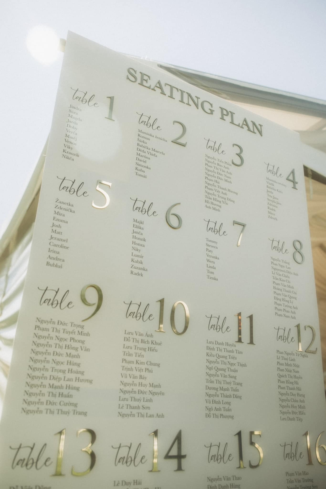
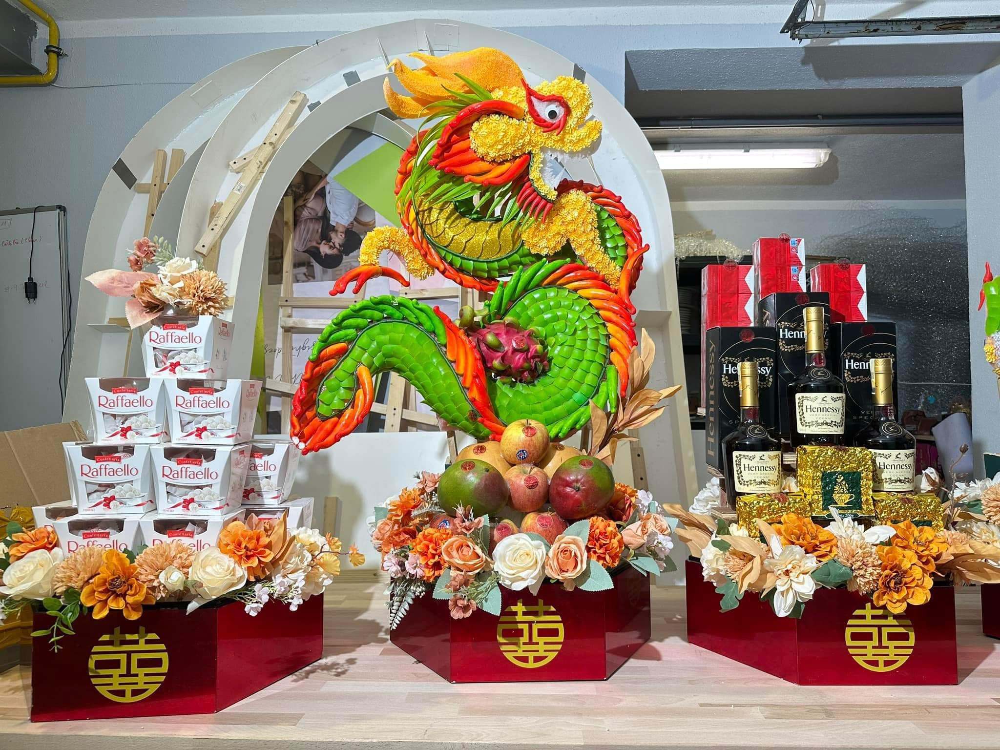
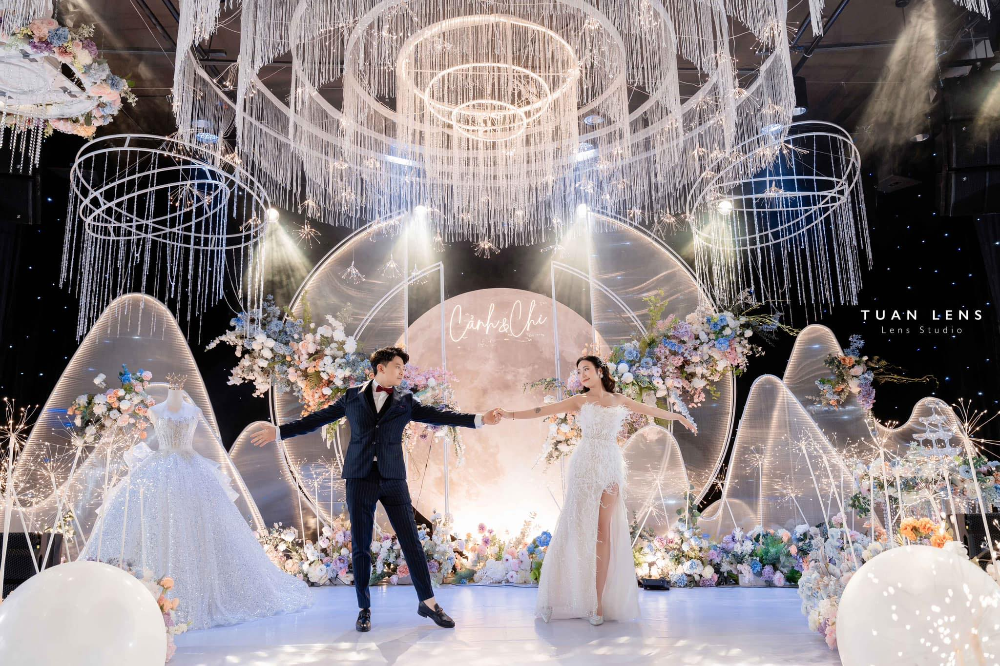

O nás
Pojďte se ponořit do našeho příběhu
Kim Thinh (Jolie)
Zakladatelka Jolie Decor
Jmenuji se Kim Thinh, ale mé jméno, které vdechl život značce, je Jolie. Už od dětství mě fascinovala krása detailů a síla atmosféry. Založením Jolie Decor jsem si splnila sen přeměňovat obyčejné prostory v neobyčejná plátna pro Vaše životní příběhy.


Začátky Jolie Decor
Náš první workshop červen 2021
Jolie Decor má kořeny u těch nejlepších. Cestovala jsem do Vietnamu, abych se naučila světovou úroveň eventové floristiky a techniky vizuálního dramatu. Tyto unikátní znalosti jsem přivezla do Česka. Brzy poté jsme otevřeli náš první workshop Továrnu na sny, kde se vietnamská preciznost setkává s evropským stylem.
Náš první velký design
Konec roku 2021
Na konci roku 2021 jsme ukázali, co v Jolie Decor umíme! Náš první velký design, využívající unikátní postupy a světové standardy, byl okamžitý zlom. Šlo o pohlcující vizuální show, která potvrdila, že precizní provedení a dokonalý cit pro detail tvoří nepřekonatelnou kombinaci. Od té doby tvoříme bez hranic!


Rozvoj a expanze
2022 - 2023
Roky 2022 a 2023 byly ve znamení expanze. Úspěšně jsme rozšířili naše portfolio o narozeninové oslavy pro každý věk a předsvatební obřady (tradiční i moderní). Tento dynamický růst vyústil v kompletní remake našeho ateliéru. Naše nové studio je nyní kreativní showroom, kde se klienti mohou osobně ponořit do světa Jolie Decor.
Věčná láska
Svatba mé mladší sestry
Nejosobnější projekt ze všech! Navrhnout svatební den pro mou mladší sestru byla ta největší čest a zkouška zároveň. Emocionální tlak se proměnil v čistou kreativní vášeň.Vytvořila jsem pro ně design odrážející jejich romantický příběh – velkolepou scénu s Měsíčním pozadím, kaskádou křišťálů a květinami v snových barvách. Tato svatba mě utvrdila: každou dekoraci tvořím s láskou, jako by byla pro mou vlastní rodinu.


Tým, který tvoří dokonalost
2024 - současnost
Do roku 2024 jsme vstoupili jako silnější tým dekoratérů pro realizaci Vašich velkých vizí. Náš růst jsme podpořili založením úzké sítě prověřených profesionálů – od fotografů a filmařů po make-up artisty. Tato synergie nám umožňuje tvořit pro Vás ty nejlepší, vizuálně soudržné designy. Jolie Decor je dnes synonymem pro bezstarostnou dokonalost.